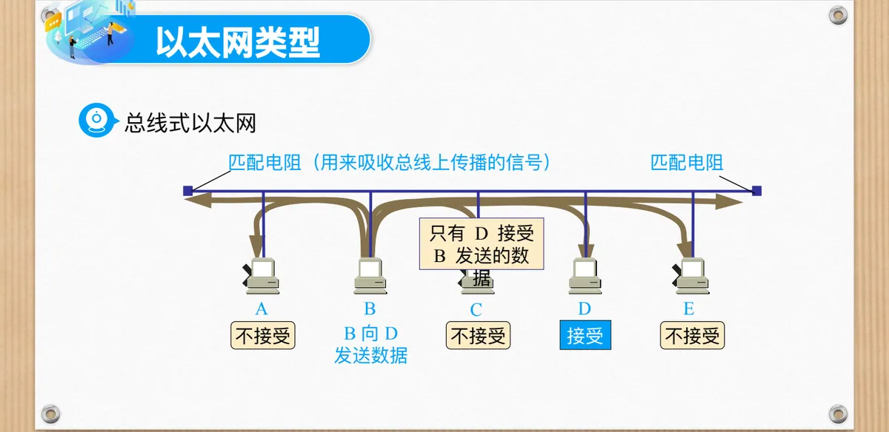
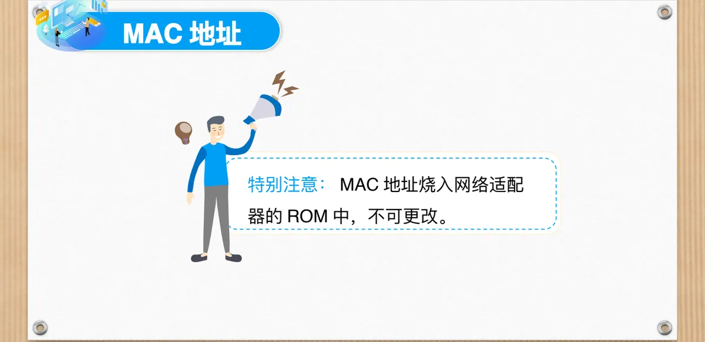
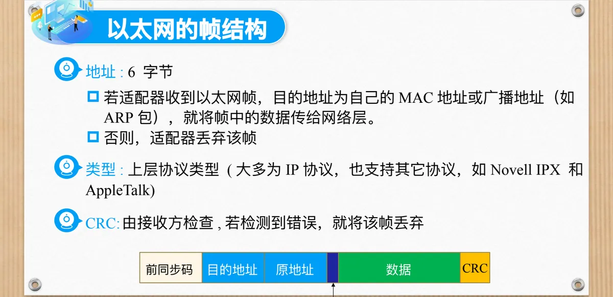
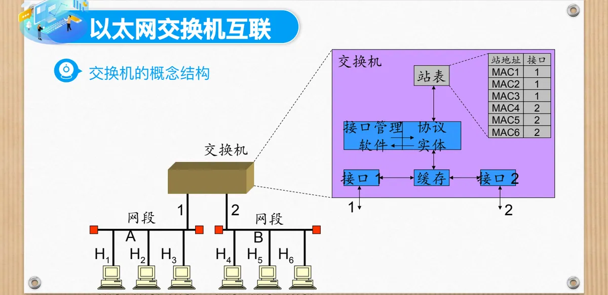
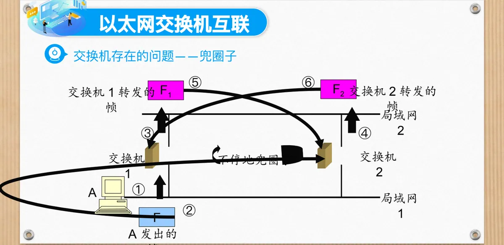
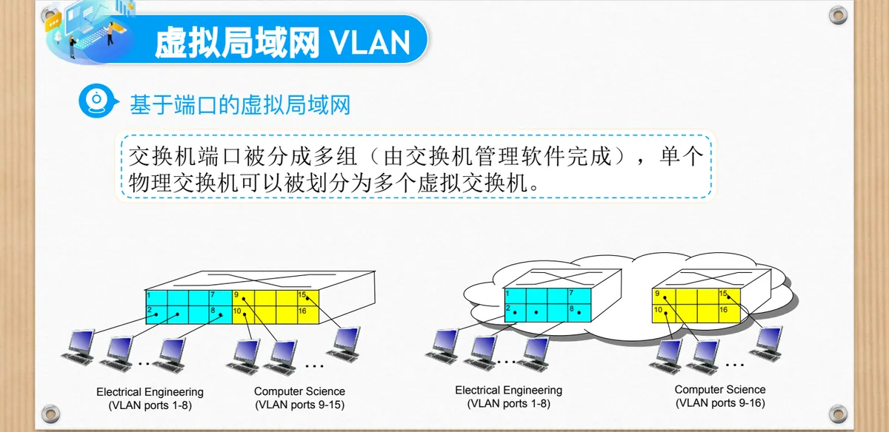

计算机通信与网络 · 第二版讲义 · 第 4 章 局域网
4.3 以太网
以太网（Ethernet）是今天使用最广的局域网 LAN（Local Area Network）技术。本节接着 4.1 节的局域网概述，先看以太网的由来、速率演进与拓扑结构，再讲它提供的服务、MAC 地址与帧格式、帧定界与 CSMA/CD，然后看集线器、交换机及其互联，最后比较交换机与路由器，并介绍虚拟局域网 VLAN（Virtual LAN）。
1. 以太网的由来
以太网诞生于 20 世纪 70 年代，发明者是 Bob Metcalfe 和 David Boggs，提出它的企业是施乐帕洛阿尔托研究中心 Xerox PARC。Metcalfe 借鉴夏威夷大学无线分组网 ALOHAnet 的思想，把它改造成适用于有线传输的版本：用一根同轴电缆作为共享总线，所有计算机都接到这根电缆上，任一台机器发出的信号都会传到所有机器。为管理多个节点同时发送造成的冲突，以太网引入了载波侦听多路访问/碰撞检测 CSMA/CD（Carrier Sense Multiple Access with Collision Detection），目标是高速、低成本、可扩展的局域网。
2. 从 10 Mb/s 到 1.6 T：以太网的速率演进
1978 年，数字设备公司 DEC（Digital Equipment Corporation）与英特尔公司 Intel 加入施乐，三方共同定义了 10 Mb/s 以太网标准，它成为 IEEE 802.3 10 Mb/s 标准的基础，对应产品是粗缆的 10BASE5。此后介质从 10BASE5（粗缆）换到 10BASE2（细缆）、10BASE-T（双绞线），拓扑从总线过渡到星型，中央设备由集线器换成交换机。
20 世纪 90 年代进入百兆与全双工阶段：100BASE-TX（快速以太网 Fast Ethernet）把速率提到 100 Mb/s，仍用双绞线，并引入全双工模式，收发同时进行，不再需要 CSMA/CD；千兆以太网（Gigabit Ethernet，1000BASE-X/T）开始标准化（IEEE 802.3z/ab）。2000 年代千兆普及到桌面，服务器端开始部署 10GBASE-R 万兆以太网，以太网进入数据中心和运营商核心网络。
2010 年代，40GBASE、100GBASE 标准成熟（IEEE 802.3ba），数据中心以太网 DCB（Data Center Bridging）与 RoCE（RDMA over Converged Ethernet）出现，以太网替代了部分专用的 SAN（Storage Area Network）/InfiniBand 场景。2020—2025 年走向超高速与低延迟：200GBASE、400GBASE 商用（IEEE 802.3bs、802.3cd），800GBASE 标准发布（IEEE 802.3df），面向 AI 集群和云数据中心；IEEE 正在推进 1.6T Ethernet（IEEE 802.3dj），预计 2026—2027 年完成标准化。800G/1.6T 光模块（QSFP-DD、OSFP-XD）服务于大规模 AI/ML 负载，以太网还与时间敏感网络 TSN（Time-Sensitive Networking）融合，用于工业控制、自动驾驶等低延迟场景。
3. 以太网采用过的四种拓扑结构
以太网用过总线、环型、星型、树型四种拓扑。总线拓扑流行于 20 世纪 90 年代中期，所有节点挂在一根共享总线上，同处一个碰撞域，一次只允许一个节点发送；介质破损时断口会形成信号反射，发送节点误认为冲突，于是「总是冲突」，早期 10BASE5、10BASE2 同轴电缆以太网就是这种结构。
环型拓扑把节点首尾相连成闭合环路，单点断开可能导致环路中断；传统环网在以太网中少见，但工业以太网有以太网环保护倒换 ERPS（Ethernet Ring Protection Switching，IEEE 802.1Qay/802.1Qca）等环网冗余协议和令牌环以太网变种。
星型拓扑让每个节点通过单独的链路连到中央设备（集线器或交换机），易于管理和故障定位，但中心设备是单点故障；双绞线以太网（10BASE-T、100BASE-TX、1000BASE-T）普遍采用它。树型拓扑是层次化的星型结构，多个星型网络经骨干链路级联，根节点通常为核心交换机；它易扩展、适合大型网络的分层管理，能隔离冲突域、提高性能，大型企业网和校园网常用，并常与 VLAN 和三层交换配合实现分布式管理。
4. 以太网的类型：总线式与交换式
按节点与信道的连接方式，以太网分为总线式与交换式，差别在于一个站发出的帧会被谁收到。处理这类问题的规则属于媒体接入控制 MAC（Media Access Control）子层，其中最基础的是地址。
总线式以太网以共享总线为介质，两端各接一个匹配电阻，用来吸收传播到总线尽头的信号、避免反射。任一个站发出的帧都会沿两个方向传到所有站，因此每台适配器都要检查帧的目的 MAC 地址，只有目的站接收。

交换式以太网把每个站点用单独的链路接到中央设备上，这个设备可能是集线器，也可能是交换机：用集线器时各端口在物理层连成一体，共享同一个碰撞域；用交换机时各端口分属不同的碰撞域，站点之间可以并行通信。
5. 以太网提供的服务
以太网向网络层提供的是无连接、不可靠的服务。「无连接」指收发适配器之间不需要握手；「不可靠」指接收适配器不发送确认帧，也不发送否认帧，帧因碰撞或差错被丢弃后以太网自己不会重传。
因此交给网络层的数据报之间可能存在间隙：若应用使用 TCP，间隙会被填充；否则应用就会看见间隙。
6. 传统以太网的物理层与 MAC 地址
传统以太网有四种物理层实现：10BASE5（粗缆）、10BASE2（细缆）、10BASE-T（双绞线）、10BASE-F（光缆）。介质不同，但上面的 MAC 子层一致。
MAC 地址的作用是在数据链路层标识每一块网络适配器，使适配器能在广播信道上寻址目标节点：帧被所有站收到，只有地址匹配的适配器才把数据交给上层。MAC 地址共 48 bit，例如 1A-2F-BB-76-09-AD；前 24 bit 由 IEEE 分配管理，称为组织唯一标识符 OUI（Organizationally Unique Identifier），后 24 bit 由厂商自行分配。要注意，MAC 地址烧入网络适配器的 ROM 中，不可更改。

7. 以太网的帧格式
以太网把网络层交下来的数据报封装成帧，一个帧由下列字段组成。
- 前同步码：8 字节，前 7 字节格式为 10101010，最后一个字节为 10101011，用于同步收发双方的时钟；
- 目的地址与源地址：各 6 字节，即收发双方的 MAC 地址；
- 类型：上层协议类型，大多为 IP 协议，也支持 Novell IPX、AppleTalk 等；
- 数据字段：46 至 1500 字节，承载网络层交下来的数据报；
- 循环冗余校验 CRC（Cyclic Redundancy Check）：由接收方检查，检测到错误就将该帧丢弃。

接收端只把有用的帧交上去：目的地址是自己的 MAC 地址或广播地址（例如 ARP 包）就交给网络层，否则丢弃该帧。地址过滤在适配器里完成。
8. 帧定界：接收方怎样找到帧的边界
帧在连续的比特流中传送，接收方必须先明确一帧从哪里开始、到哪里结束，这叫帧定界。常见做法有四种。
- 字符计数法：帧头用一个字段表示帧的字节数；计数字段出错会导致帧边界全乱；
- 字符填充法：用特殊的「标志字符」标记帧的开始和结束，数据中出现标志字符时插入转义字符 ESC 加以区分；
- 比特填充法：用特殊的比特模式（例如 01111110）作帧标志，数据中出现相同模式时在其中插入一个额外的 0；典型应用是高级数据链路控制 HDLC 协议；
- 违规编码法（Physical Layer Violation）：在编码层用「非法信号」表示帧边界，例如曼彻斯特编码中平时不出现的电平组合。
以太网用的是物理层违规法加特定结构：7 字节前导码（Preamble）内容为反复出现的 10101010（0xAA），为接收端提供规律的比特序列以同步时钟；紧跟的 1 字节帧开始定界符 SFD（Start Frame Delimiter）内容为 10101011（0xAB），标志帧的真正开始。二者合起来就是前面所说的 8 字节前同步码。
9. 以太网使用的 CSMA/CD
4.2 节讲过载波侦听与碰撞检测的基本思想，以太网把它落成可执行的规则，有四个特点：没有时隙；侦听到其它适配器正在传输就不传帧，即载波侦听；正在传输时检测到别的适配器也在传输就中止自己的传输，即碰撞检测；重传之前等待一段随机时间，即随机回退。
发送算法分五步：① 收到网络层数据报，创建帧；② 信道空闲就开始传输，忙则等到空闲再传；③ 传完整个帧而未检测到其它适配器的传输，本帧传输完成；④ 传输中检测到别的适配器也在传输，就停止传输并发送拥塞信号；⑤ 中止后进入指数回退：一帧经历第 m 次碰撞后，从 {0, 1, 2, …, 2m−1} 中随机选一个 K 值，等待 K×512 比特时间后返回第 ② 步。
其中拥塞信号用来确保所有传输者都能检测到碰撞，长度为 48 bit；比特时间是传输 1 bit 所需的时间，在 10 Mb/s 以太网中 K = 1023 时等待时间约 50 ms。指数回退的目的是估计信道负载，负载重时等待更长；可选范围随碰撞次数加倍——第一次碰撞后从 {0, 1} 中选 K，延迟为 K×512 比特传输时间，第二次后从 {0, 1, 2, 3} 中选，第十次后从 {0, 1, 2, 3, 4, …, 1023} 中选，此后不再增大。
使用 CSMA/CD 的以太网只能双向交替通信，即半双工通信，不能全双工；每个站在发送后的一小段时间内都可能遭遇碰撞，这种不确定性使全网平均通信量远小于最高数据率。4.2 节把端到端往返时延 2τ 称为争用期或碰撞窗口，以太网取 51.2 μs 为争用期，10 Mb/s 下恰好发送 512 bit，即 64 字节：前 64 字节没有碰撞，后续数据就不会碰撞；一旦碰撞必定发生在前 64 字节之内。又因检测到碰撞立即中止发送，已发出的数据一定小于 64 字节，因而最短有效帧长为 64 字节，更短的帧都是因冲突异常中止的无效帧，数据字段最小 46 字节的规定正与它呼应。
10. 集线器：把网段连成一个大碰撞域
集线器（Hub）工作在物理层，只做信号的整形与放大，收到比特就向其它端口转发。用主干集线器把若干局域网段互联可扩展节点间的最大距离，但原先各自独立的网段碰撞域会变成一个大的碰撞域：任一端口有信号都会被扩散到所有端口，各站仍要按 CSMA/CD 竞争同一个信道。它也不能把 10BaseT 与 100BaseT 以太网互联，因为它只处理电信号，不理解速率与帧格式的差别。
11. 交换机：MAC 层的存储转发设备
交换机（Switch）是存储—转发设备，在 MAC 层实现 LAN 互连。它先把整个帧收进缓存，看清目的 MAC 地址后再从合适的接口转发出去。

从概念结构看，交换机由若干接口、接口上的缓存和一张站表构成，另有维护站表的接口管理软件与协议实体。站表登记「站地址—接口号」的对应关系：网段 A 上 H1 至 H3 的地址 MAC1 至 MAC3 对应接口 1，网段 B 上 H4 至 H6 的地址 MAC4 至 MAC6 对应接口 2。
12. 以太网交换机的互联
（1）工作原理与优势
交换机不断监听各接口是否有信号；收到无差错的帧就缓存，有差错的帧就丢弃；若帧的目的 MAC 地址属于另一个网段，就通过站表决定向哪个接口转发；同一网段内通信的帧不转发；转发时也不修改帧的源地址。
好处是过滤通信量、扩大物理范围、提高可靠性，还能互连不同物理层、不同 MAC 子层和不同速率的局域网。代价是：完整接收后再转发增加了时延；MAC 子层没有流量控制，负荷重时缓存可能溢出而丢帧；广播帧扩散到全网，规模一大就会出现广播风暴，所以交换机只适合用户少于几百个、通信量不太大的局域网。
（2）与集线器的区别
集线器只在物理层把覆盖距离简单地延长，而且距离有限；交换机在 MAC 层工作，理论上可做到无限延长。集线器只有信号整形和放大功能，仅是硬设备；交换机是智能互连设备，能提供存储/转发、数据过滤、路由选择等能力，既有硬件也有软件。
（3）透明性与选路原理
交换机对站点是透明的：局域网上的每个站都不知道所发送的帧将经过哪几个交换机，即交换机对各站「看不见」。这来自自学习：交换机不必人工配置站表，看清帧从哪个接口进来即可。完整过程如下。
- ① 从接口 x 收到帧，有差错则丢弃，否则在站表中查找目的 MAC 地址；
- ② 找到则取出接口 d，转第 ③ 步；否则转第 ⑤ 步；
- ③ 若接口 d 就是 x，则丢弃此帧，否则从接口 d 转发；
- ④ 转到第 ⑥ 步；
- ⑤ 向除 x 以外的所有接口转发（可保证找到目的站）；
- ⑥ 如源站不在站表中，则将源站 MAC 地址、入接口号和时间写入站表并设置计时器，转第 ⑧ 步；否则转第 ⑦ 步；
- ⑦ 更新计时器——拓扑经常变化，超时记录要删除，以反映最新状态；
- ⑧ 等待新的数据帧，转第 ① 步。
（4）兜圈子与支撑树算法
为提高可靠性，常在交换机之间接冗余链路，而冗余会带来新问题：局域网 1 与局域网 2 之间有两条路径、经交换机 1 与交换机 2 构成回路时，A 发出的帧被反复转发，在两台交换机之间不停地兜圈子。

解决办法是支撑树算法：互连的交换机彼此通信后，找出原拓扑的一个子集，其中整个连通网络不存在回路；支撑树确定后交换机把某些接口断开。算法选择一个交换机为树的根，以最短路径为依据找到树上每个结点；为反映拓扑变化，每隔几秒钟每台交换机要广播自己的标识号和它所知道的其它交换机。缺点是互连局域网数目非常大时，算法可能花很多时间。
13. 以太网交换机与路由器的比较
交换机与路由器都是存储转发设备，但工作层次不同：交换机是链路层设备，只看帧的 MAC 地址，维护交换表，实现 MAC 地址过滤与学习算法；路由器是网络层设备，要检查网络层头部，维护路由表，实现路由算法。从协议栈看，主机要实现完整的五层，交换机只处理到第 2 层，路由器要处理到第 3 层。
再加上集线器，三类设备的分工可以用一张表概括。
| 功能 | 集线器 | 路由器 | 交换机 |
|---|---|---|---|
| 流量隔离 | 无 | 有 | 有 |
| 即插即用 | 有 | 无 | 有 |
| 优化选路 | 无 | 有 | 无 |
| 直通交换 | 有 | 无 | 有 |
流量隔离指能否把通信量限制在局部，集线器把所有端口连成一个碰撞域，做不到，交换机与路由器都能；即插即用指无需配置就能工作，集线器与交换机靠自学习转发，路由器必须配置路由或运行路由协议；优化选路指能否按拓扑为分组挑选较好的路径，只有路由器具备；直通交换指收到帧后能否尽快开始转发，集线器逐比特转发，交换机查到目的接口即可转发，路由器要完整处理网络层头部。
14. 虚拟局域网 VLAN
虚拟局域网 VLAN（Virtual LAN）是指以软件方式实现逻辑工作组划分与管理的一种网络工作组组建技术。它要解决的问题是：交换机端口默认处于同一广播域，站点一多广播开销就大，而只按物理位置分组又满足不了按职能组网的需要。
VLAN 有三个基本特征：局域网交换机是组建虚拟局域网的核心设备，划分与管理由交换机上的软件完成；各结点不受物理位置的限制，同一逻辑工作组的成员不一定要连接在同一个物理网段上；结点从一个工作组转移到另一个工作组，只要通过软件设定，不必改变物理位置。
（1）基于端口的 VLAN
最常见的划分方式是基于端口：交换机的端口被分成多组（由交换机管理软件完成），单个物理交换机因此可被划分为多个虚拟交换机。例如把 1 至 8 号端口划给电气工程系、其余端口划给计算机系，两个部门的通信在交换机内部就被隔开。

（2）构建方式与成员管理
构建方式有三种：基于交换机接口号、基于 MAC 地址、基于 IP 地址。基于接口号最常用；也可以基于各端点的 MAC 地址定义 VLAN，这样端口可以在 VLAN 之间动态分配，设备换到别的端口仍属于原来的 VLAN。
（3）流量隔离与 VLAN 之间的转发
VLAN 的第一个好处是流量隔离：来自 1 至 8 号端口的帧只能发送到 1 至 8 号端口。部门之间需要通信时，则通过路由完成 VLAN 之间的转发，就像各部门各用一台单独的交换机再用路由器连起来；实际上，供应商出售的交换机已把路由功能组合了进来。
（4）干线端口与 802.1Q 帧格式
同一 VLAN 的成员分布在多个物理交换机上时，交换机之间必须互相传递 VLAN 帧，这样的接口称为干线端口（Trunk Port）。干线端口上转发的帧不是普通的以太网帧，必须包含 VLAN ID 信息：在 802.1Q 协议中，干线端口转发帧时要添加额外的报头字段，接收时再删除，对端交换机才能判断帧属于哪个 VLAN，只把它转发给同一 VLAN 的端口——这就是基于 802.1Q 的 VLAN 帧格式。
本节小结
- 以太网 20 世纪 70 年代诞生于施乐 PARC，最初以一根同轴电缆作共享总线、靠 CSMA/CD 管理信道争用；1978 年 DEC、Intel 与施乐定义的 10 Mb/s 标准成为 IEEE 802.3 的基础，此后经百兆、千兆、万兆演进到 800G 与 1.6T。
- 它用过四种拓扑，最终以星型和树型为主流；向网络层提供无连接、不可靠的服务，不握手、不确认、不重传，可靠性留给上层 TCP。
- MAC 地址 48 bit，前 24 bit 是 IEEE 分配的 OUI 号，后 24 bit 由厂商分配，烧入适配器 ROM 不可更改；帧由前同步码、源与目的地址、类型、46 至 1500 字节数据字段和 CRC 组成，定界用物理层违规法：7 字节前导码同步时钟，1 字节 SFD 标志帧的真正开始。
- CSMA/CD 靠载波侦听、碰撞检测与随机回退工作：碰撞后先发 48 bit 拥塞信号，再按指数回退从 {0, 1, …, 2m−1} 中取 K，等待 K×512 比特时间后重传；争用期 51.2 μs 对应 10 Mb/s 下的 64 字节，即最短有效帧长。
- 集线器在物理层把各网段合并成一个大碰撞域；交换机在 MAC 层存储转发，靠自学习建立「站地址—接口号」的站表，优点是过滤通信量、扩大范围、提高可靠性，代价是时延、缓存溢出和广播风暴，冗余链路造成的兜圈子由支撑树算法断开部分接口来消除。交换机与路由器都是存储转发设备，前者在链路层、维护交换表，后者在网络层、维护路由表。
- VLAN 用软件划分逻辑工作组，使成员摆脱物理位置的限制，可按端口、MAC 地址或 IP 地址构建以隔离流量；跨交换机时由干线端口承载带 VLAN ID 的 802.1Q 帧，VLAN 之间通过路由转发。